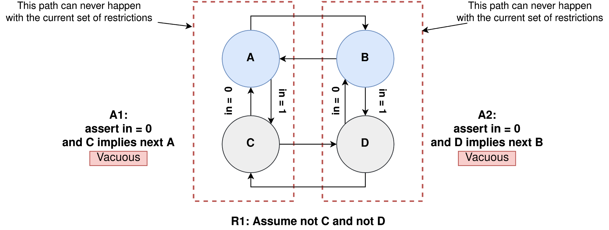
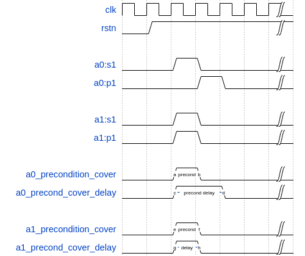
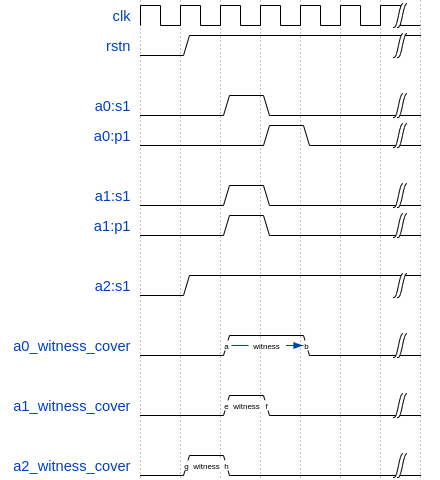
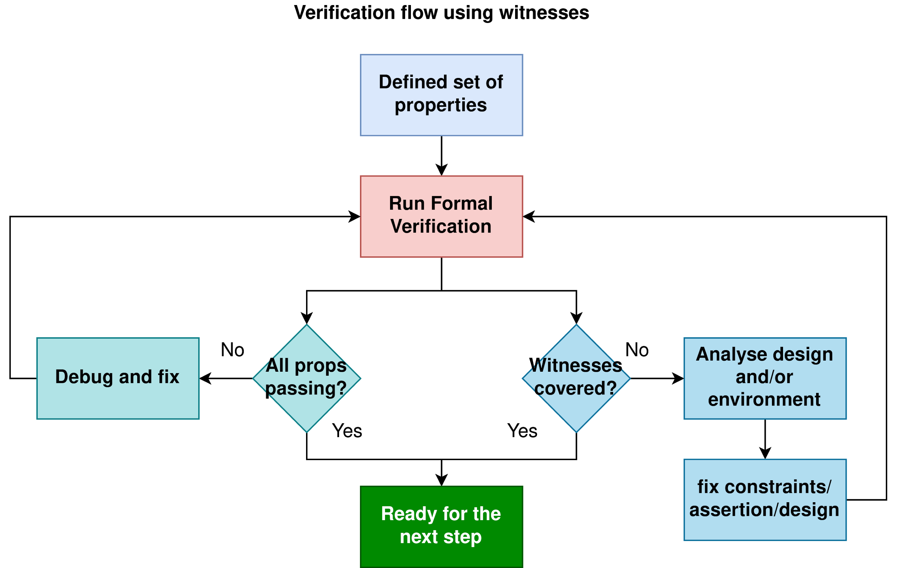
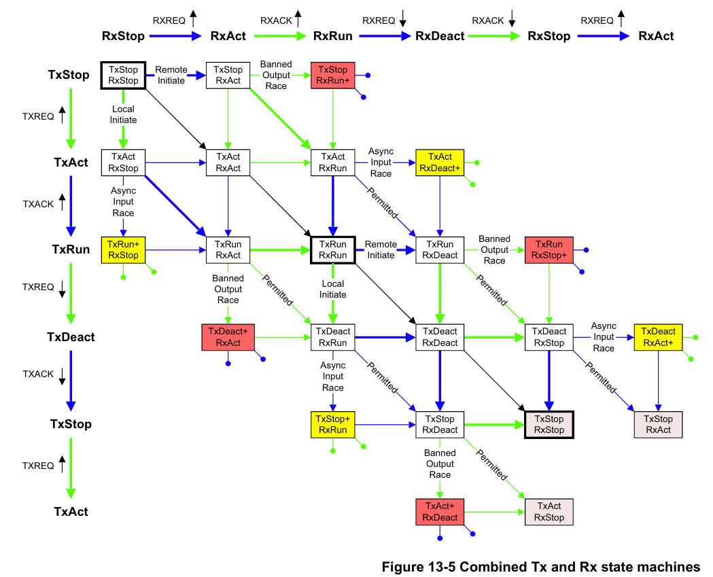
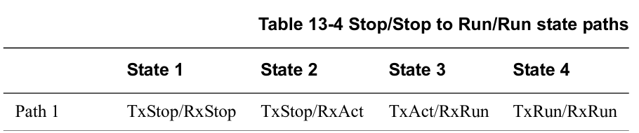
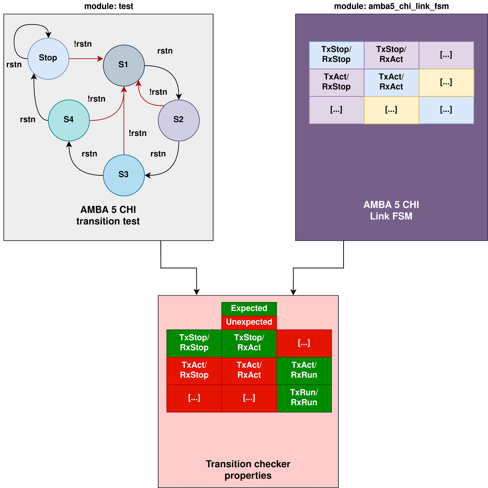
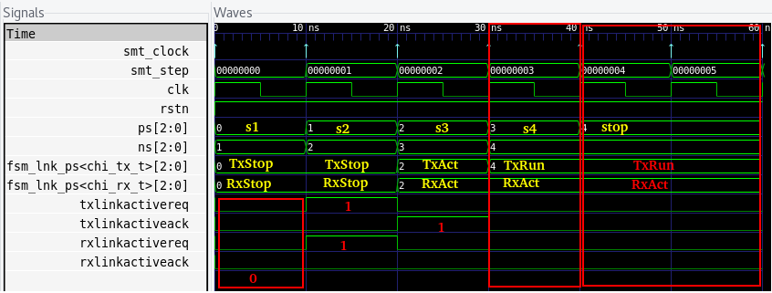

Weak precondition cover and witness for SVA properties¶
Am I testing what I think I’m testing? - series¶
What You will learn in this paper |
|---|
|
Note
The source code for this Application note is provided in:
Link to github repo https://github.com/YosysHQ-AppNotes/AppNote-120
Also, you need Tabby CAD Suite! Ask us for an evaluation license: https://www.yosyshq.com/contact
Abstract¶
Formal Verification uses mathematical techniques to exhaustively prove that a property, or an obligation that must hold in a system, is proven under all possible conditions or inputs of an RTL design. When this property is falsified, a waveform or trace showing the sequence of inputs leading to the violation is produced by the tool, but when no violation occurs, the tool reports that a property is proven and no further evidence of what trace leads to the proof of such assertion is generated. Furthermore, assertions and assumptions are often composed of a precondition (an expression that specifies when a property should be checked) and a consequence (the condition that must hold for all possible paths in the design). When the precondition is not triggered for any reason, the assertion will pass vacuously 1.
This application note presents a methodology that uses two special cover expressions, known as weak precondition and witness covers, that can help to detect and debug false positives due vacuous results, as well as a method to extract an evidence of a proven property in a form of a waveform. First, we present scenarios where weak precondition covers and witnesses can be employed to identify problems in the Formal Property Verification (FPV) environment, and then we finalise by showcasing some more difficult sequences using AMBA 5 CHI Link FSM example and how this methodology helps to detect properties that are passing successfully but are not sound.
Introduction¶
FPV proves that a property that describes the behaviour of a system, usually described in SystemVerilog Assertions (SVA) or Property Specification Language (PSL) in VHDL, holds in a circuit by exhaustively searching in the design space using all possible inputs, a sequence of values that leads to an state where the specified behavior is violated. It then generates a counterexample (CEX) in the form of a waveform or trace 2 that leads to failure. But, if the solver cannot find a violation, the FPV tool reports that the property was proven and no further evidence of what scenarios were tested to reach that conclusion are generated.
One of the most common problems that happens to both experienced and fresh engineers when working with FPV is when a number of properties are passing vacuously and this result is not detected. Since the nature of FPV is not generating evidence of the traces used to demonstrate the conclusion that no assertion was violated, debugging vacuity can be a difficult task. For example, sometimes the number of constraints causes conflicts with the current suite of assertions. To solve this problem, some heuristics can be used to identify which constraints are the conflicting ones, and refine them, but this is a tedious task and usually requires a good understanding of the design.
Vacuity is present in a design due numerous reasons, including:
The property does not correctly express the behavior to be proven.
The semantics of the SVA property are different from what the design/verification engineer thought. That means, if the logic that fires an assertion never happens, then this assertion will always pass regardless of the logic that is supposed to be checked by the assertion.
The design does not exhibit the triggering behavior because the design is overconstrained, or in other words, the expected behaviour is restricted.
Constraints limit the design states and generate conflicts to specified properties that are supposed to check such states if they are in the cone of influence of the assertion (see Figure 1.1).
|  |
|---|
Figure 1.1. The restriction R1, represented as states grayed out, will make both assert statements A1 and A2 pass vacuously, since the precondition (state C and state D) can never be true. |
{kind=link}
Having a way to observe evidence of what the solver is taking as proof of a property is also useful for the following reasons:
Provides guidance to verification engineers wanting to cover design behaviours.
Capturing a sequence of events that can be used to feed back into the RTL model by design engineers.
Ensure correct RTL implementation when no testbench is developed.
Increase confidence in the design by comparing a trace of a proven property with the semantics of the written assertion.
Both weak precondition and witness covers can be used to assist in the task of avoiding false positives by refining vacuity as well 3, or providing evidence of a trace that the solver uses as a proof of a property. The following sections show how to use these special covers and how to apply them.
Weak Precondition Cover¶
The weak precondition cover statement is shown in Figure 1.2. This cover demonstrates that the precondition of a property can be covered, or can evaluate to true, with the current set of constraints and the configuration of the system. By adding an extra task to the SBY file to add weak precondition covers of assertions, in cover mode, Tabby CAD can validate if the result of the property is obtained from a valid behavior if both prove and cover mode succeeded, or if there is a discrepancy or vacuity if assertion passses but the weak precondition is not reachable.
precondition_cover: cover property(antecedent);
precondition_cover_delay: cover property(antecedent ##DELAY 1'b1);
|
|---|
Figure 1.2. Weak precondition cover expressions. The precondition_cover checks reachability of the antecedent, and the precondition_cover_delay checks the same but adds an extra delay to observe what happens in the following clock cycle. The 1’b1 after the bounded delay will match anything after antecedent sequence match, and its main purpose is to help build valid syntax of the two sequence concatenations used in here. |
The precondition_cover can be used to check that properties that use implication operators can be proven non vacuously. The precondition_cover_delay can be used for both properties that do not use implication operator as well as properties that use it. The unbounded delay ##DELAY can only be 1 if the property uses non-overlapping implications, or 0 if the property uses overlapping implications. For example, the weak precondition cover of the property a0: s1 |=> p1 and a1: s1 |-> p1 in both precondition and precondition with delay are:
a0_precondition_cover: cover property(s1);
a0_precond_cover_delay: cover property(s1 ##1 1'b1);
a1_precondition_cover: cover property(s1);
a1_precond_cover_delay: cover property(s1 ##0 1'b1);
|
|---|
Figure 1.3. Assuming default clock and reset definition, the weak precondition cover of the expression a0. For a1, both precondition covers show the same trace as they are logically equivalent. |
The Figure 1.4 shows a waveform diagram of these cover statements and how they will look for this design.
|  |
|---|
Figure 1.4. The waveform shows that precondition_cover_h0 reaches only the condition s1 whereas precondition_cover_delay_h0 adds an extra delay to capture the behavior at the next clock cycle. |
{kind=link}
Note
This cover does not add complexity to the design, and usually most FPV tools extract by themselves this kind of cover expression. It is also important to mention that for properties with nested implication, the weak precondition is different since context may be needed as well to derive the weak precondition covers.
It is also possible to use the weak precondition cover to verify that the expression of a triggering assumption is reachable. For example, the weak precondition cover of the assumption a1: assume property(en |=> !o_rst) is:
precondition_cover: cover property(en);
precond_cover_delay: cover property(en ##1 1'b1);
|
|---|
Figure 1.5. Using weak precondition cover as a guidance to avoid invalid constraints. In this example, without using the weak precondition cover, if the signal en is never true, the constraint will be invalid. By using the weak precondition cover, this scenario will be detected. |
Covering only the antecedent (like in precondition_cover syntax) is the preferred precondition cover statement that most FPV tools use, and the weak precondition cover with delay can be also used to visualize behaviors at the next clock cycle of the overlapping implications. Most of the situations where vacuity is the reason for passing properties can be detected by using the weak precondition cover, however, there are cases where this cover is reachable, but the proof can still pass vacuously because of the weak semantics of the sequence property 4. For these cases, the witness cover can detect such problems at the price of adding a little complexity or computational overhead to the FPV tool.
Witness Cover¶
The witness cover is similar to the weak precondition cover but it adds the consequent of the property to the cover expression. In this way, Tabby CAD looks for a path where both triggering condition and effect of the property can be seen. The generated waveform can be used as evidence of a trace that the solver used to prove an assertion, or to make sure the constrained behaviour can be seen in the design.
The witness cover expression of a triggering property (using implication operator) is shown in Figure 1.6.
witness_cover: cover property(antecedent ##DELAY consequent).
|
|---|
Figure 1.6. The witness cover uses both the antecedent and consequent to find a path in the design where both are reachable. |
For example, the witness covers of the properties a0: property(s1 |=> p1), a1: property(s1 |-> p1) and a2: property(s1) are:
a0_witness_cover: cover property(s1 ##1 p1);
a1_witness_cover: cover property(s1 ##0 p1);
a2_witness_cover: cover property(s1);
|
|---|
Figure 1.7. Assuming default clock and reset definition, the witness cover of the expression a0 and a1. Note that for a property that does not use the implication operator, covering the expression as in a2_witness_cover generates a witness, not a weak precondition cover. |
It is important to note that the witness cover is not the removal of the implication operation and the change of the assert statement to a cover statement but a concatenation of the two sequences composed by the antecedent and the consequent of a property. The implication operator in a cover statement does not have defined semantics in the IEEE 1800-2012 LRM. The generated witness using this syntax is only one of the possible traces the solver found as an evidence of validity, but it may not be the only one.
Note
Some tools will not extract this cover by default because the cover adds extra overhead to the design and may not be desirable to have it enabled all the time, or when certain scenarios do not benefit from witnessing traces.
|  |
|---|
Figure 1.8. The witness is the assertion logic (antecedent and consequent) converted into a cover statement, whereas the weak precondition is just a precondition reachability test with limited visibility. |
{kind=link}
Methodology¶
The general recommendation is to use both weak precondition covers and witnesses in a mixed way. But, due to the nature of Tabby CAD separating prove and cover modes, the witness covers can be used to get a stronger version of vacuity detection instead. The following section describes where and how both precondition cover and witness can be employed to increase confidence in FPV results.
Both weak precondition cover and witness, when reachable, can be used to:
Eliminate scenarios of vacuous properties, thus avoiding false positives.
Debugging unreachable states, insufficient depth in BMC and root-cause an overconstrained set of assumptions.
Get evidence of proven behaviors, also to compare the traces with assertion semantics to identify semantic errors when defining properties.
Debug dead-ends and weak sequences that may have a vacuous suffix.
When these covers are not reachable, the following reasoning can be derived:
Properties that passed with covers that are unreachable are not healthy.
A property with successful status where the precondition or witness is unreachable, is vacuous and needs further analysis. The weak precondition and witness cover can be used to relax the constraints to a state where the conflict between assertions and assumptions is solved.
The FPV run can be stopped any time there are discrepancies between the covers and the asserts.
For example, a regression system for large projects can be built, where if vacuity happens for a group of important properties, the run can be stopped and the engineering team can be informed immediately instead of wasting cycles for meaningless vacuous properties to converge.
In any other environment, if an important number of constraints are used and the properties start to pass vacuously, the run can be stopped as well, since no conclusive result will be obtained from this run. Instead of having a false sensation of confidence and catching the problem in later flows due to vacuous results, the engineering team can improve the environment by debugging the constraints/settings and release an RTL with better QoR.
Assumptions can be checked by using both special covers.
Conflicts between properties and assumptions, dead ends, fairness obligation and liveness property 5 loops can be checked using both special covers.
YosysHQ recommends using a mixed set of weak precondition covers and witnesses, but is inclined to the witness cover because it is stronger than the rest. For example, in designs with assertions with an important number or related constraints, witnesses can improve vacuity detection. For early RTL implementation or first FPV run, the weak precondition cover will not add high computation overhead. It is also suggested to incrementally move to witness cover to increase confidence of the current set of assertions and results.
A flow to apply weak precondition cover or witness is shown below.
|  |
|---|
Figure 1.9. The Methodology flowchart. When the properties are passing and the witness covers (or weak precondition) are unreachable, the results are unsound and will need extra analysis. Without this cover, the verification or design engineer may take for granted that the behaviour was proven when in reality this was not the case. |
{kind=link}
Let’s consider three examples. First, consider what happens when design assumptions prevent a state from becoming reachable. In Figure 1.10, we have a design which accepts an 8-bit key as an input, and it asserts an unlock signal once the key matches a certain programmed value. The unlock signal can never be logic 1 in an FPV run, since the restrict_val assumption constrains the solver to never consider values greater than 8’h83 for the key primary input.
always_ff @(posedge clk) begin
if (!rstn) unlock <= 1'b0;
else
if (key inside {8'b1?0??1?0}) unlock <= 1'b1;
end
restrict_val: assume property(key < 8'h83);
unlock_test: assert property(key[7] && !key[5] && key[2] && !key[0] |-> ##1 unlock);
|
|---|
Figure 1.10. In this example, for the unlock port to be asserted, the input key minimum value should be 8’h84, but the constraint restrict_val does not allow that value to be reached. The property will pass vacuously because that part of the logic was never activated. Execute sby -f sandbox.sby example1 and the assertion will pass. |
Another example that involves logic and connectivity issues, such as inverting pins or ports tied to constant values that block the testing of some properties, can introduce errors that make properties pass vacuously. In Figure 1.11, a default disable statement accidentally prevents the delayed_reset assertion from being triggered.
var logic [1:0] sreg;
always_ff @(posedge clk) begin
if (!rstn) sreg <= 2'h0;
else sreg <= {sreg[0], 1'b1};
end
`ifdef FORMAL
default clocking fpv_clk @(posedge clk); endclocking
// Disable the check if the design is in reset state
default disable iff (!rstn);
/* This can be used as well, since the reset is
* synchronous: default disable iff($(sampled(!rstn))); */
delayed_reset: assert property (!rstn |-> ##2 delayed_rst);
|
|---|
Figure 1.11. One of the most common mistakes that causes properties to pass vacuously is when the default disable cause restricts a variable to take the value defined in the property. In this example all properties are disabled when the system is in reset state (or when the rstn pin is low). But the property delayed_reset mistakenly uses the restricted value to check for a condition, making the assertion to pass vacuously. Execute sby -f sandbox.sby example2 and the assertion will pass. |
Finally, it’s possible that the solver just hasn’t had enough cycles to reach a particular state needed to prove a property. For example, when performing a Bounded Model Check (BMC), you might not have sufficient depth configured. In Figure 1.12, the BMC depth is set with a value less than the required to reach the expected maximum latency of an expected behaviour of a property.
// Property:
tready_max_wait: assert property(@(posedge ACLK) disable iff(!ARESETn)
TVALID & !TREADY |-> ##[1:16] TREADY);
# SBY configuration file
[options]
mode bmc
depth 14
|
|---|
Figure 1.12. If the bound for a BMC is less than the bound needed to reach a useful state for proving the property, it will pass and might even leave a bug undetected. The witness cover is specially useful when performing BMC tests, making sure the property scenario is reachable with the current bound. |
Application of the Methodology¶
Reviewing the three prior examples, we can now illustrate how inserting weak precondition and witness covers can help ensure proper assertion status. In Figure 2.1 we insert either the weak precondition s_weak or the witness s_witness, either of which ensures SBY reaches a state where key >= 8’h84. Additionally, s_witness ensures that unlock will subsequently hold. Observe how the only difference between s_weak and s_witness is whether or not the expected consequent is part of the property.
always_ff @(posedge clk) begin
if (!rstn) unlock <= 1'b0;
else
if (key inside {8'b1?0??1?0}) unlock <= 1'b1;
end
restrict_val: assume property(key < 8'h83);
unlock_test: assert property(key[7] && !key[5] && key[2] && !key[0] |-> ##1 unlock);
s_weak: cover property(key[7] && !key[5] && key[2] && !key[0]);
witness: cover property(key[7] && !key[5] && key[2] && !key[0] ##1 unlock);
|
|---|
Figure 2.1. Since the restrict_val constraint introduces a bug that causes the property to not trigger, the weak precondition s_weak and witness s_witness will catch the error, resulting in an unreachable status. Execute sby -f sandbox.sby witness1 and the witness will show an unreachable status, flagging a vacuous result. |
In Figure 1.11, we saw how an accidental default disable statement can render an otherwise reasonable assertion vacuous. In Figure 2.2, we detect this situation with the witness s_witness.
var logic [1:0] sreg;
always_ff @(posedge clk) begin
if (!rstn) sreg <= 2'h0;
else sreg <= {sreg[0], 1'b1};
end
default clocking fpv_clk @(posedge clk); endclocking
// Disable the check if the design is in reset state
default disable iff (!rstn);
/* This can be used as well, since the reset is
* synchronous: default disable iff($(sampled(!rstn))); */
delayed_reset: assert property (!rstn |-> ##2 delayed_rst);
witness: cover property (!rstn ##2 delayed_rst);
|
|---|
Figure 2.2. The s_witness witness will capture the problem of the inverted reset polarity in the property. Execute sby -f sandbox.sby witness2 and the witness will show an unreachable status, flagging a vacuous result. |
For our final example, when the bound defined in the formal tool configuration is less than the required by a property to be checked, the result is inconclusive. Using witnesses helps to be sure that the desired state is reachable with the current bound, and if not, flag it as erroneous, so the engineer can increase the bound of the solver. It is important to mention that the increase of the bound is derived generally from analysis of latencies, study of micro-architecture, and delays added by visiting possible interesting scenarios. But usually, the depth is increased in magnitudes of 10 cycles.
// Property:
tready_max_wait: assert property(@(posedge ACLK) disable iff(!ARESETn)
TVALID & !TREADY |-> ##[1:16] TREADY);
# SBY configuration file
[options]
mode bmc
# ERROR:
# This is clearly an insufficient
# bound and the witness will
# evidentiate this as an
# unreachable statement.
depth 14
---
# FIX:
# Increasing the bound will enable
# the solver to reach the expected
# scenario. The witness will
# evidentiate this as a
# reachable statement.
depth 24
|
|---|
Figure 2.3. If the scenario is unreachable due insufficient bound, the s_witness cover will result in a failure. |
In the next section, this methodology is employed to reveal possible environmental issues by changing logic that the property does not detect, yet still passes.
Case Study I - AXI4 Valid-Ready After Reset¶
Consider the design in Figure 3.1. This is a simple AXI4 module with an assertion that is proving the TVALID after reset rule. This assertion passes even though an obvious error has been introduced.
`default_nettype none
module axi4_tvalid
(input wire ACLK,
input wire ARESETn,
input wire TREADY,
output logic TVALID);
/* "A master must only begin driving TVALID
* at a rising ACLK edge following a rising edge
* at which ARESETn is asserted HIGH".
* Ref: 2.7.2 Reset, p2-11, Figure 2-4. */
logic first_point;
always_ff @(posedge ACLK) begin
if (!ARESETn) first_point <= 1'b0;
else first_point <= 1'b0;
end
logic TVALID_nxt;
always_ff @(posedge ACLK) begin
if (!ARESETn) TVALID <= 1'b0;
else TVALID <= TVALID_nxt;
end
assign TVALID_nxt = (~first_point & TREADY);
`ifdef FORMAL
TVALID_condition: assert property (@(posedge ACLK) first_point |-> !TVALID_nxt);
|
|---|
Figure 3.1. Erroneous design for illustration. Note how first_point never changes from 0, so the assertion is traduced to (0 |-> !TVALID_nxt). Execute sby -f axi_tvalid.sby prove and the assertion will pass. |
As can be seen in Figure 3.2, the result of SBY is successful, although the property is obviously incorrect.
SBY 15:51:17 [top] engine_0.basecase: finished (returncode=0)
SBY 15:51:17 [top] engine_0: Status returned by engine for basecase:
pass
SBY 15:51:17 [top] summary: Elapsed clock time [H:MM:SS (secs)]:
0:00:00 (0)
SBY 15:51:17 [top] summary: Elapsed process time [H:MM:SS (secs)]:
0:00:00 (0)
SBY 15:51:17 [top] summary: engine_0 (smtbmc) returned pass for
induction
SBY 15:51:17 [top] summary: engine_0 (smtbmc) returned pass for
basecase
SBY 15:51:17 [top] summary: successful proof by k-induction.
**SBY 15:51:17 [top] DONE (PASS, rc=0)**
|
|---|
Figure 3.3. Results of running sby -f axi_tvalid.sby prove with the erroneous design. |
The reason the proof fails is because first_point was set to 0 regardless of the state of ARESETn; therefore, TVALID_condition is never triggered (it is vacuous) and it always passes regardless of the logic driving TVALID_nxt.
We choose to use a witness to confirm the condition is being covered. The following modifications are added to the design:
`ifdef FORMAL
TVALID_condition: assert property (@(posedge ACLK) first_point |-> !TVALID_nxt);
TVALID_witness: cover property (@(posedge ACLK) first_point ##0 !TVALID_nxt);
`endif
|
|---|
Figure 3.4 Line TVALID_witness is introduced into the formal proof for this design. Execute sby -f axi_tvalid.sby witness and the witness cover will fail, successfully detecting the problem introduced in first_point logic. |
From this example, an SBY recipe can be derived that adds an extra task named witness to detect vacuous results. The Figure 3.5 shows this SBY recipe.
[tasks]
prove
witness
[options]
prove: mode prove
witness: mode cover
[engines]
smtbmc
[script]
# Synthesis Script, replace it with your files/RTL
read -define FORMAL
read -sv axi_tvalid.sv
prep -top axi4_tvalid
[files]
axi_tvalid.sv
|
|---|
Figure 3.5. Introducing the witness task and its corresponding options in the SBY file. |
As explained before, the assertion will not trigger because it was disabled by the bug, so even though the assertion passes, the witness task can be launched to confirm the relevance of the assertion result. If the witness check results in a negative (unreachable) answer, which we see that it does in Figure 3.6, then there’s a problem that needs to be fixed.
SBY 11:00:56 [axi_tvalid_witness] engine_0: ## 0:00:00 Checking
cover reachability in step 16..
SBY 11:00:56 [axi_tvalid_witness] engine_0: ## 0:00:00 Checking
cover reachability in step 17..
SBY 11:00:56 [axi_tvalid_witness] engine_0: ## 0:00:00 Checking
cover reachability in step 18..
SBY 11:00:56 [axi_tvalid_witness] engine_0: ## 0:00:00 Checking
cover reachability in step 19..
SBY 11:00:56 [axi_tvalid_witness] engine_0: ## 0:00:00 Unreached
cover statement at TVALID_witness.
SBY 11:00:56 [axi_tvalid_witness] engine_0: ## 0:00:00 Status:
failed
SBY 11:00:56 [axi_tvalid_witness] engine_0: finished (returncode=1)
SBY 11:00:56 [axi_tvalid_witness] engine_0: Status returned by
engine: FAIL
SBY 11:00:56 [axi_tvalid_witness] summary: Elapsed clock time
[H:MM:SS (secs)]: 0:00:00 (0)
SBY 11:00:56 [axi_tvalid_witness] summary: Elapsed process time
[H:MM:SS (secs)]: 0:00:00 (0)
SBY 11:00:56 [axi_tvalid_witness] summary: engine_0 (smtbmc)
returned FAIL
**SBY 11:00:56 [axi_tvalid_witness] DONE (FAIL, rc=2)**
SBY 11:00:56 One or more tasks produced a non-zero return code.
|
|---|
Figure 3.6. Results of running sby -f axi_tvalid.sby witness, indicating a failure. |
Case Study II - AMBA 5 CHI Link FSM¶
Consider the AMBA 5 CHI FSM shown in Figure 13-6 of Section “13.6.3 Expected transitions” that is shown below. This expected state transition path is described in the AMBA 5 CHI specification as “Table 13-4 Stop/Stop to Run/Run state paths”.
|  |
|---|
|  |
Figure 4.1 Graphical description of the AMBA 5 CHI link FSM states and relationships. |
{kind=link}
{kind=link}
The objective is to test a module that should accomplish the transition shown in Path 1 (see Figure 4.1). To achieve this goal, two modules are provided to verify the expected path transition: A simple module test that drives the input Tx/Rx pairs of the module amba5_chi_link_fsm, a module that implements the AMBA 5 CHI link FSM as shown in Figure 4.1. The architectural view of this example is shown in Figure 4.2.
Note: The RTL of the amba5_chi_link_fsm is large, therefore is not shown in the document. However, it is suggested to open the file and analyse it while reading the next part of this appnote.
|  |
|---|
Figure 4.2. Block architecture view of the AMBA 5 CHI test environment. The gray box shows the FSM implementation of module amba5_chi_link_fsm. The purple box shows the inputs that are programmed in a small FSM implemented by the test module. Finally, the red box shows expected results encoded as a set of FPV properties. This last block can be considered as an FPV checker. |
{kind=link}
The following requirements needs to hold in the design:
A property that ensures that the design cannot transit to a banned output (shown in red boxes in the Figure 4.2).
A property that ensures that the Path 1 shown in table 13-4 is reached correctly with the current sequence of inputs provided by the test module.
A property that ensures that the first transition (TxStop/RxStop -> TxStop/RxAct) is correct.
The Table 4.1 shows the encoding of such properties. Note how the properties are using weak unbounded sequences (a ##[+] b).
ap_banned_output: assert property (initial_current_state |-> ##[+] banned_output);
ap_completed_path: assert property (initial_current_state |-> ##[+] completed_path);
ap_initial_path: assert property (initial_current_state && (txlinkactivereq || rxlinkactivereq)
|
|---|
Table 4.1. Properties ap_banned_output and ap_completed_path are using weak unbounded sequences. |
Three bugs are hidden in the design, and yet the properties are passing. To verify and debug that problem, the following witness shown in the Table 4.2 are attached to the design as well:
wp_banned_output: cover property (initial_current_state ##[+] banned_output);
wp_completed_path: cover property (initial_current_state ##[+] completed_path);
wp_initial_path: cover property (initial_current_state && (txlinkactivereq || rxlinkactivereq)
|
|---|
Table 4.2. Related witnesses added to the properties of Table 4.1. |
By running SBY in in prove mode, all properties are passing as shown in Figure 4.3:
SBY 17:49:44 [test_prove] engine_0.basecase: finished (returncode=0)
SBY 17:49:44 [test_prove] engine_0: Status returned by engine for
basecase: pass
SBY 17:49:44 [test_prove] summary: Elapsed clock time [H:MM:SS
(secs)]: 0:00:00 (0)
SBY 17:49:44 [test_prove] summary: Elapsed process time [H:MM:SS
(secs)]: 0:00:00 (0)
SBY 17:49:44 [test_prove] summary: engine_0 (smtbmc) returned pass
for induction
SBY 17:49:44 [test_prove] summary: engine_0 (smtbmc) returned pass
for basecase
SBY 17:49:44 [test_prove] summary: successful proof by k-induction.
SBY 17:49:44 [test_prove] DONE (PASS, rc=0)
|
|---|
Figure 4.3. All properties are passing at the very first run of FPV. That does not give much information back, and some engineers with no prior experience in FPV may think the design is bug free. But is that the case?. Execute sby -f amba5_chi_link_fsm.sby prove and all assertions will pass. |
But, when checking with the witnesses tasks, they reveal some important problems:
SBY 17:58:34 [test_witness] engine_0: ## 0:00:00 Reached cover
statement at wp_initial_path in step 2.
SBY 17:58:34 [test_witness] engine_0: ## 0:00:00 Unreached cover
statement at wp_completed_path.
SBY 17:58:34 [test_witness] engine_0: ## 0:00:00 Unreached cover
statement at wp_banned_output.
|
|---|
Figure 4.4. Of three assertions, only one got both assert and witness success match, for the witness of the other two, the conditions are not reachable. Execute sby -f amba5_chi_link_fsm.sby witness to get this result. |
As Figure 1.9 of Section Methodology suggests, further analysis is needed to generate a conclusion and/or fix the problems in the RTL. The following sections show how to debug the results obtained by the witness cover.
Unreached Witness Analysis¶
After analysing the failure of property ap_banned_output: “A property that ensures that the design cannot transition to a banned output (shown in red boxes in the Figure 4.2)” with the witness cover, it can be seen that a set of banned transitions are not yet implemented in the design. This property can be enclosed in compiler directives to disable the check until the logic for banned output transition is added, and then the user can enable back the property.
`ifdef BANNED
// for this bug, this path is not implemented and the controller does not execute the paths to transition to that state
assign banned_output = fsm_lnk_ps.chi_tx_t == TxStop && fsm_lnk_ps.chi_rx_t == RxRunp;
ap_banned_output: assert property (initial_current_state |-> ##[+] banned_output);
wp_banned_output: cover property (initial_current_state ##[+] banned_output);
`else
|
|---|
Figure 4.5. If RTL is not implemented yet, it can be enclosed in compiler directives while the responsible engineer of this module finishes the implementation. |
Debugging Unreached Witness¶
For the failure in the witness of the property ap_completed_path: “A property that ensures that the path 1 shown in Table 13-4 is reached correctly with the current set of options”, the failure is a little more complicated. This witness is not reachable, and the assertion is proven, therefore there’s no information in this case of why this is failing. Moreover, if the engineer used the weak precondition cover instead of the witness, this problem would have been undetected making it more difficult to debug.
To root-cause this scenario, the elegant solution is to convert the weak sequence to a strong one, or opt to calculate the latency from the initial state to some interesting point of the design and see what is happening. In other words, by modifying the witness sequence, an evidence of the design behaviour can be obtained. The problem can be understood with this evidence.
The design takes 4 clock cycles to travel from s1 to stop. The witness of the behaviour can be then encoded as follows:
we_completed_path: cover property (initial_current_state ##4 1'b1);
|
|---|
Figure 4.6. The initial_current_state sequence is concatenated to whatever comes after 5 clock cycles, to have evidence of the design behavior. The same method can be applied to extend traces obtained by the FPV tool, by increasing the cycles of the delay. |
The second witness shows that due the sum of all problems with incorrectly driven inputs and the nature of the weak unbounded sequence, the FSM can transition to an unexpected state as shown below:
Current state |
Inputs |
Next state |
|---|---|---|
TxStop/RxStop (smt_step 0) |
All 0 |
TxStop/RxStop |
TxStop/RxStop (smt_step 1) |
txlinkactivereq, rxlinkactivereq = 2’b11, rest 0 |
TxAct/RxAct |
TxAct/RxAct (smt_step 2) |
txlinkactiveack = 1’b1, rest 0 |
TxRun/RxAct |
TxRun/RxAct (smt_step 3) |
All 0 |
TxRun/RxAct |
The following image helps to correlate with the table of above. This trace is generated from the second witness we_completed_path.
|  |
|---|
Figure 4.7. Witness evidence of the design behavior generated by we_completed_path. |
{kind=link}
But if the precondition current_state is enabled and the consequent is false, why did the property not fail?. Because the weak unbounded sequence (##[+]) does not witness the inability of the precondition completed_path to happen during the test (the test consists of four states that cannot be expanded further, if no issue is witnessed during all runs, a weak sequence results in a true value therefore not falsifying the consequent).
The witness cover is a stronger version of the property ap_completed_path as the consequent completed_path needs to be covered in any of the reachable states of the model. For the property without using a witness to be able to detect the unreached consequent, it should use a strong unbounded sequence, but this will convert the property to a liveness type. A suggested and simple approach to take instead is to continue with the safety nature of the property, and analyse the microarchitecture to define the expected delay instead of using the unbounded version as done with we_completed_path. This is an example of why using witness can help to debug complex issues.
ap_completed_path: assert property(initial_current_state |-> ##4
completed_path;
|
|---|
Figure 4.8. Refining the delay of the behavior needed for a property, to replace an unbounded sequence. |
To fix this, the following modification to s3 is needed, along with solving the last problem presented by ap_completed_path witness.
s3: begin {txlinkactiveack, rxlinkactivereq} = 2'b11; ns = s4; end // TxAct/RxRun
|
|---|
Figure 4.9. Part of the fix of this issue, there is still one problem to fix. |
For the unreached witness of ap_completed_path: “A property that ensures that the first transition (TxStop/RxStop -> TxStop/RxAct) is correct”, it is expected that rxlinkactivereq is asserted and txlinkactivereq is deasserted in state s1 of the controller for the FSM to be able to transition from TxStop/RxStop to TxStop/RxAct. Since the inputs are not set, and the default values of unset inputs are 0 by the implementation, the precondition of the property is equivalent to initial_current_state && (1’b0 || 1’b0), which evaluates to 0, making this property pass vacuously.
always_comb begin
ns = ps;
rxlinkactivereq = 1'b0;
txlinkactivereq = 1'b0;
txlinkactiveack = 1'b0;
rxlinkactiveack = 1'b0;
case (ps)
s1: begin ns = s2; end //TxStop/RxStop
|
|---|
Figure 4.9. A problem in the test module that makes a property pass vacuously. |
Note
Solutions to all problems are provided in the files amba5_chi_link_fsm_solution.sby and amba5_chi_link_fsm_solution.sv. Execute sby -f amba5_chi_link_fsm_solution.sby and both tasks will pass successfully now.
Final Remarks
For future releases of Yosys HQ, the weak precondition cover extraction will be done automatically, and the witness extraction will be possible to enable by default.
In this app note, all the assertions are inlined. In a future application note the assertions will be attached to a module using a bind SystemVerilog construct.
Special thanks to the notes pointed out by the [R]eviewers/[C]ontributors:
Matt Venn [R], Tudor Timi [C], Samuel Falvo [R], Claire Xen [C], Yosys HQ team [R].
- 1
A vacuous pass means that the property does not check the intended behavior and the tool will never find a violation regardless of the logic that drives this specific implementation.
- 2
Some solvers or engines guarantee that the CEX found is the shortest possible, whereas other engines are aimed to reach deep states of the design usually hard to reach with conventional solvers. For example, bug hunting engines perform deep search in the design space to find CEXs that can be hundreds of cycles long. But usually, the FPV tool is configured with an engine that finds CEX of minimal length possible.
- 3
A low formal coverage metric (such as mutation coverage) can mean that some properties have vacuous results (or are trivially proven). Coverage does not provide debug capabilities, it just shows that there exist some uncovered structures in the design that needs attention.
- 4
“There are three forms of a sequence property: sequence_expr, weak(sequence_expr) and strong(sequence_expr). A weak(sequence_expr) sequence property evaluates to true if and only if, there is not a finite prefix that witnesses inability to match sequence_expr”. From IEEE 1800-2012, Section 16.12.1 Sequence Property.
- 5
Safety properties are the prefered types of properties tested in FPV. They stipulate that something bad does not happen, and they have finite counterexamples because any path to a bad state is finite. Conversely, a liveness property stipulates that a good thing eventually happens, and they have infinite counterexamples. To check liveness properties, the tool must find finite cycles in the RTL model that do not satisfy the property, and usually a fairness obligation assumption is needed to help the tool during the liveness resolution. Is for this reason that liveness properties may not be efficient for FPV and they should be used when is absolutely necessary.